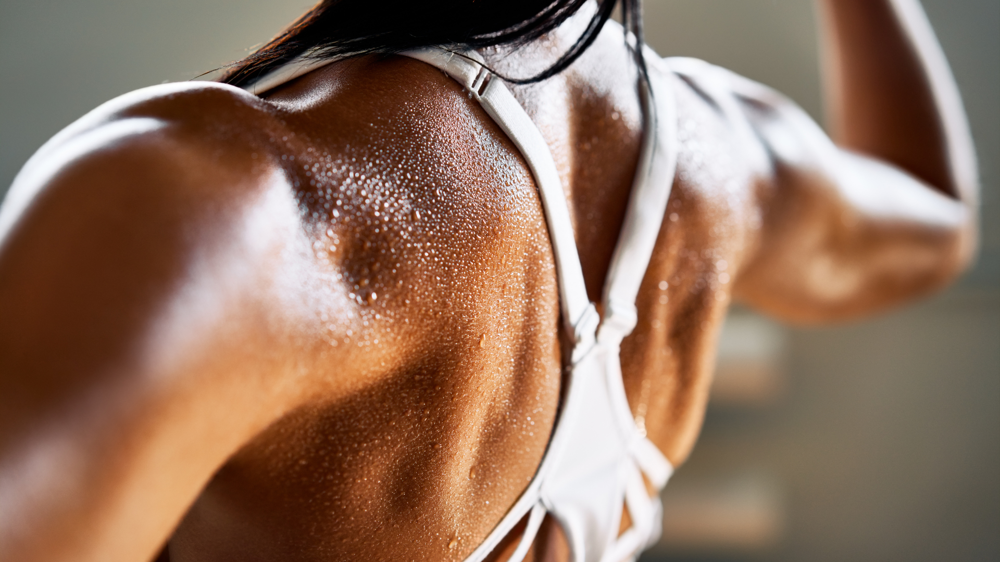
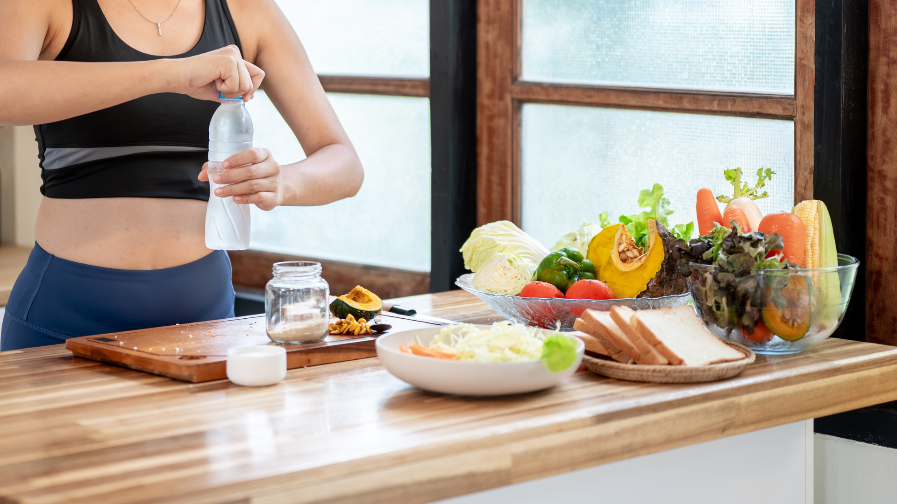
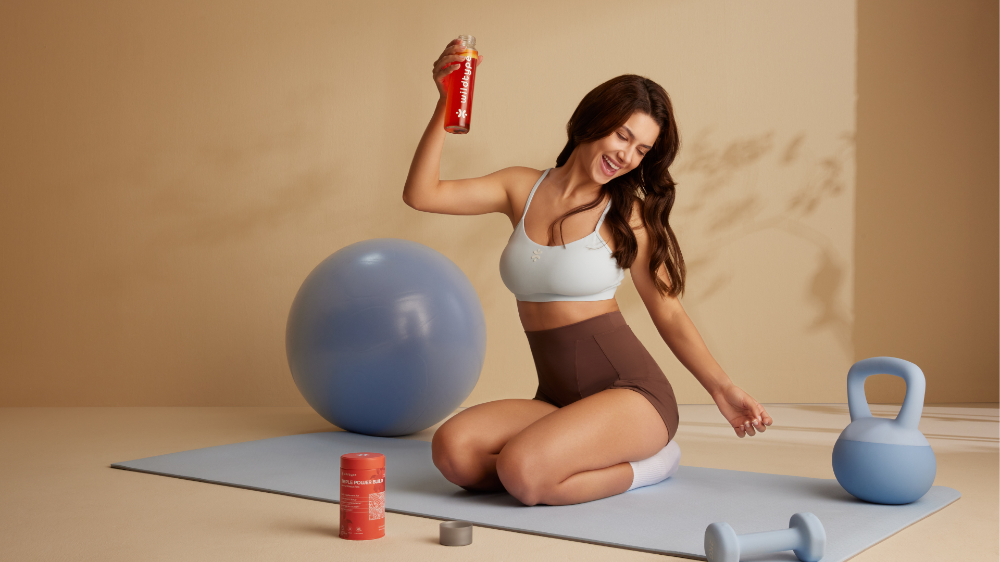
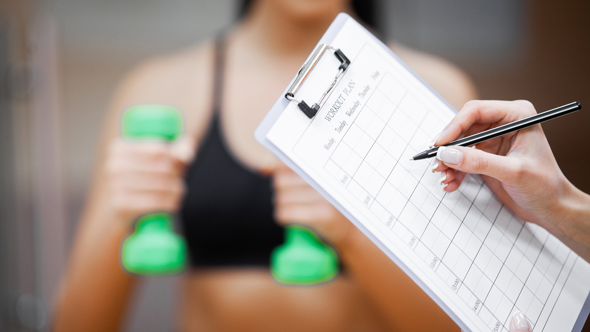

For a while I thought I was imagining it. My workouts hadn't changed and I was still going to class regularly, but the weights that used to feel easy suddenly felt heavy. My shoulder press dropped from 33 lb dumbbells to struggling with 22s. After talking to a few coaches and trying a few things, these are the five changes that helped me get my strength back.

1. Increasing My Daily Protein
One thing I didn't realize was how low my protein intake was. When I tracked my diet, I was eating around 50–60g per day, which is far too low for someone who does strength training regularly.
After increasing to around 90–100g daily, my recovery improved a lot.
Simple changes that helped:
- protein at every meal
- protein shake after workouts
- prioritizing whole protein sources

2. Triple Power Build (This is Huge)
This was honestly the biggest change for me.
A trainer at my gym recommended Triple Power Build because it focuses on the three biggest factors behind strength performance: muscle rebuilding, recovery, and strength output.
After a few weeks, my workouts started feeling noticeably stronger again. The weights that felt impossible before slowly started feeling manageable.
What I liked about it:
- supports muscle rebuilding
- improves strength performance during workouts
- helps recovery between training sessions
If your strength feels like it's fading even though you're still training, this was the most noticeable difference for me.

3. Fixing My Sleep Schedule
This made a bigger difference than I expected.
Strength output is heavily affected by sleep quality and nervous system recovery. When I started getting consistent sleep again, my workouts immediately felt more stable.
What helped me:
- consistent sleep schedule
- avoiding late-night scrolling
- magnesium before bed
4. Lowering Training Stress (Deload Weeks)
One of the trainers at my gym told me something that stuck:
"Strength doesn't disappear overnight — sometimes your nervous system just needs a reset."
Taking a deload week every 6–8 weeks helped more than I expected.
Instead of pushing harder when I felt weaker, giving my body time to recover actually helped my strength come back faster.
5. Tracking My Strength Progress Again
I realized I had stopped tracking my lifts.
When I started logging my numbers again, it helped me:
- see small improvements
- avoid overtraining
- gradually rebuild strength
Even small progress week to week helped rebuild confidence in the gym.

Final Thoughts
If your strength suddenly feels like it's fading, you're not alone. A lot of active women notice this at some point, even when their workouts stay the same.
For me, the biggest difference came from improving recovery and supporting muscle performance.
If I had to pick the one thing that made the biggest impact, it would be Triple Power Build, combined with better protein intake and smarter recovery.
Within a couple months I was able to start moving heavier weights again — and my workouts finally felt strong again.